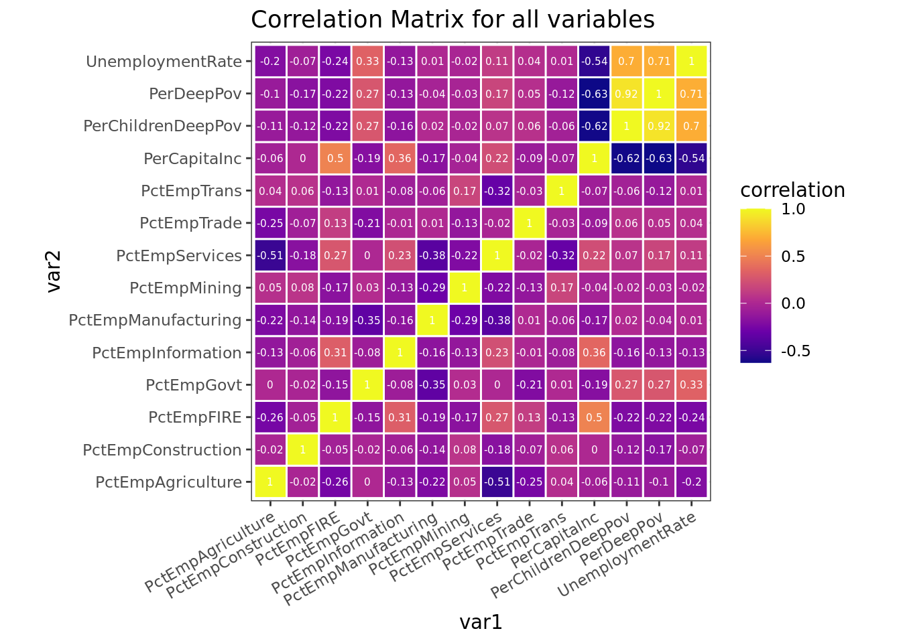
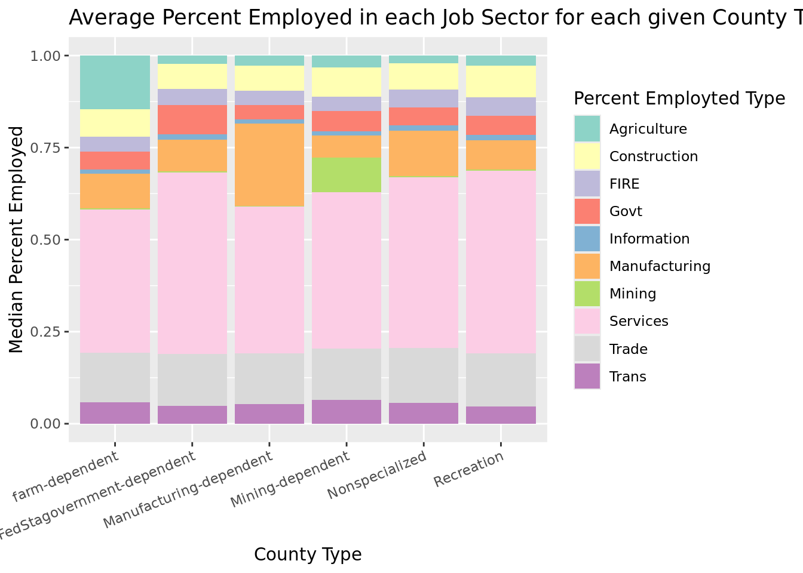
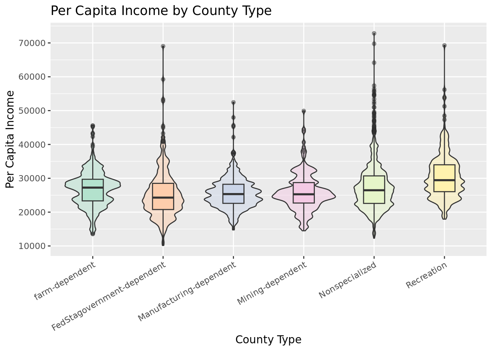
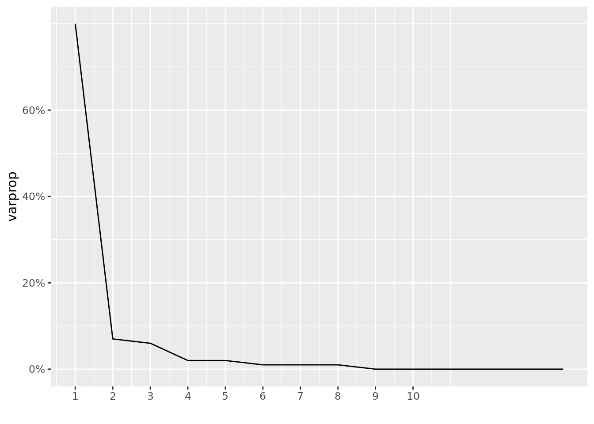
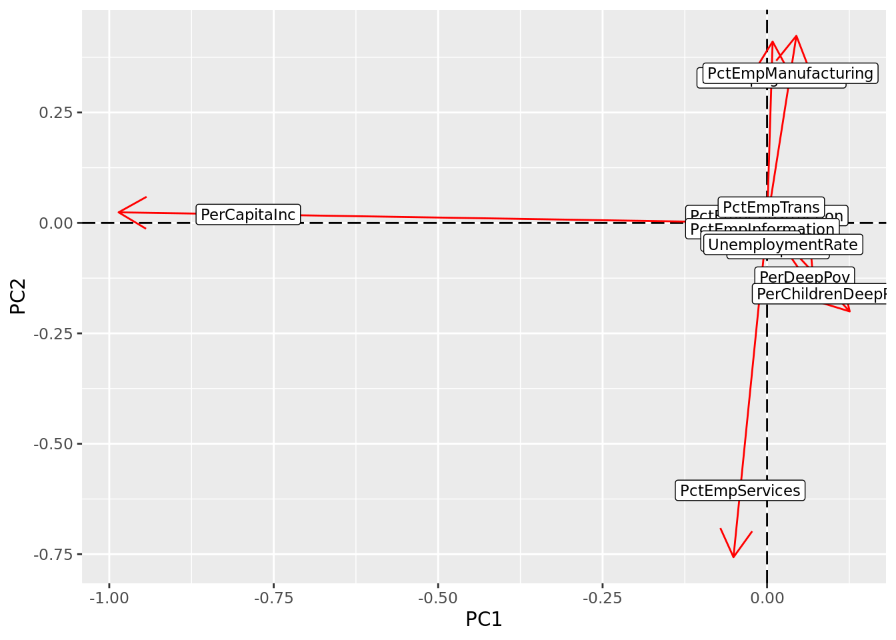
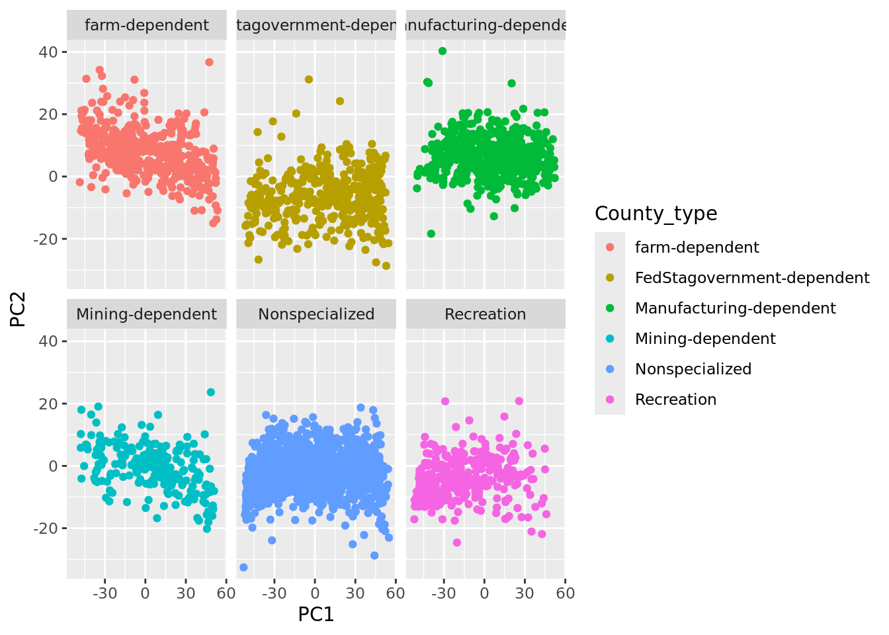
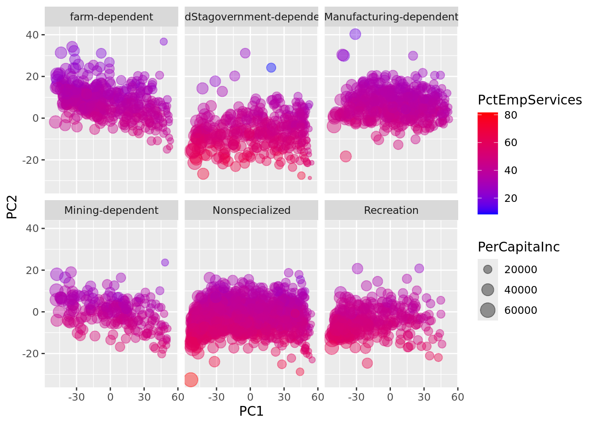
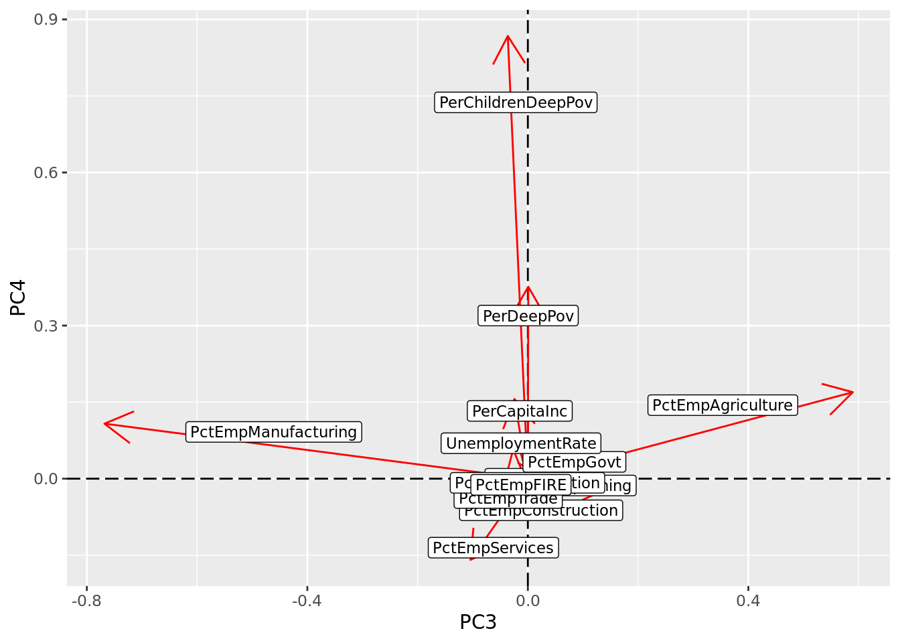
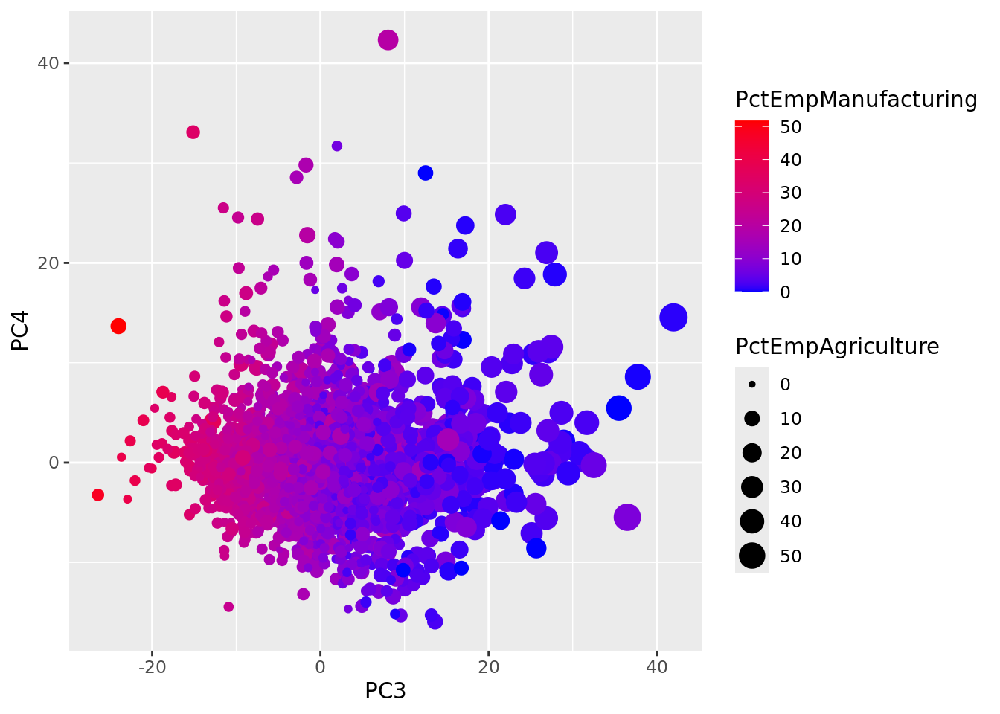

library(tidyverse)Exploratory Data Analysis
Introduction:
The data used in this project was collected from the USDA’s Atlas of Rural and Small-Town America. Located at: https://www.ers.usda.gov/data-products/atlas-of-rural-and-small-town-america/
These datasets were interesting to me as they contained data for the entire nation, but each observation was a small local. So this dataset gives a good representation of the country by area, population was not accounted for in this project. The unique county classifications and employment measurements sparked my curiosity. The other variables I acquired from these datasets were of poverty and income, as I was curious if they were correlated with a certain type of employment in a job sector.
Importing data and packages:
Packages
Read Data
jobs <- read_csv("data/ExploratoryDataAnalysis/Jobs.csv")Rows: 3278 Columns: 70
── Column specification ────────────────────────────────────────────────────────
Delimiter: ","
chr (3): FIPS, State, County
dbl (67): UnempRate2019, UnempRate2018, UnempRate2017, UnempRate2016, UnempR...
ℹ Use `spec()` to retrieve the full column specification for this data.
ℹ Specify the column types or set `show_col_types = FALSE` to quiet this message.county <- read_csv("data/ExploratoryDataAnalysis/County Classifications.csv")Rows: 3225 Columns: 45
── Column specification ────────────────────────────────────────────────────────
Delimiter: ","
chr (3): FIPStxt, State, County
dbl (42): RuralUrbanContinuumCode2013, UrbanInfluenceCode2013, RuralUrbanCon...
ℹ Use `spec()` to retrieve the full column specification for this data.
ℹ Specify the column types or set `show_col_types = FALSE` to quiet this message.income <- read_csv("data/ExploratoryDataAnalysis/Income.csv")Rows: 3278 Columns: 11
── Column specification ────────────────────────────────────────────────────────
Delimiter: ","
chr (3): FIPS, State, County
dbl (8): MedHHInc, PerCapitaInc, PovertyUnder18Pct, PovertyAllAgesPct, Deep_...
ℹ Use `spec()` to retrieve the full column specification for this data.
ℹ Specify the column types or set `show_col_types = FALSE` to quiet this message.Select applicable variables
county2 <- county %>%
select(FIPS=FIPStxt,State, County,Type_2015_Update) %>%
mutate(type=as.factor(Type_2015_Update)) %>%
mutate( County_type=
recode(Type_2015_Update,
"0"="Nonspecialized",
"1"="farm-dependent",
"2"="Mining-dependent",
"3"="Manufacturing-dependent",
"4"="FedStagovernment-dependent",
"5"="Recreation" ) ) %>%
select(-Type_2015_Update) %>%
mutate( County_type=as.factor(County_type) )The county dataset provided a classification system of US counties with measures(from 2015) of earnings and employment to create county types. I then recoded the discrete numeric values into a readable categorical variable.
jobs2 <- jobs %>%
select(FIPS,
State,
County,
contains("UnempRate"),
contains("PctEmp"),
-contains("PctEmpChange")) %>%
mutate( UnemploymentRate=
(UnempRate2018+
UnempRate2017+
UnempRate2016+
UnempRate2015+
UnempRate2014)/5 ) %>%
select(-contains("20"))
glimpse(jobs2)Rows: 3,278
Columns: 14
$ FIPS <chr> "00000", "01000", "01001", "01003", "01005", "0100…
$ State <chr> "US", "AL", "AL", "AL", "AL", "AL", "AL", "AL", "A…
$ County <chr> "United States", "Alabama", "Autauga", "Baldwin", …
$ PctEmpAgriculture <dbl> 1.2845839, 1.0695774, 0.5513182, 0.9563178, 4.4036…
$ PctEmpMining <dbl> 0.54431821, 0.41893227, 0.33161996, 0.37160389, 0.…
$ PctEmpConstruction <dbl> 6.465190, 6.537221, 6.002321, 8.269525, 6.250000, …
$ PctEmpManufacturing <dbl> 10.181289, 14.243842, 12.945614, 9.119824, 23.8876…
$ PctEmpTrade <dbl> 13.923130, 14.325943, 11.648151, 16.800351, 13.405…
$ PctEmpTrans <dbl> 5.227259, 5.366571, 6.984745, 4.925090, 6.915138, …
$ PctEmpInformation <dbl> 2.0716835, 1.5777856, 1.6290831, 1.3696870, 0.2408…
$ PctEmpFIRE <dbl> 6.557098, 5.537273, 6.259327, 7.398880, 3.967890, …
$ PctEmpServices <dbl> 49.11018, 45.48632, 43.39662, 45.72227, 33.71560, …
$ PctEmpGovt <dbl> 4.635271, 5.436537, 10.251202, 5.066450, 7.098624,…
$ UnemploymentRate <dbl> 4.94, 5.40, 4.72, 4.92, 7.72, 5.70, 4.88, 6.60, 6.…The jobs dataset provided, for each county/FIPS code, a percent of the civilian labor force 16 and over employed in a given job sector as a multi-year average from 2014 to 2018. The dataset also provided yearly unemployment rates over 2014-2018. I created a variable as the multiyear average of unemployment rate from 2014-2018 for exploratory purposes.
From the documentation of the data the categorical Job Sectors are as follows
| Job Sector Abbreviation | Meaning |
|---|---|
| Agriculture | agriculture, forestry, fishing, and hunting |
| Mining | mining, quarrying, oil and gas extraction |
| Construction | Construction |
| Manufacturing | Manufacturing |
| Trade | wholesale and retail trade |
| Trans | transportation, warehousing and utilities |
| Information | information |
| FIRE | finance and insurance, and real estate and rental and leasing |
| Services | services |
| Govt | public administration |
income2 <- income %>%
select(FIPS,
State,
County,
PerCapitaInc,
PerDeepPov=Deep_Pov_All,
PerChildrenDeepPov=Deep_Pov_Children)
glimpse(income2)Rows: 3,278
Columns: 6
$ FIPS <chr> "00000", "01000", "01001", "01003", "01005", "01007…
$ State <chr> "US", "AL", "AL", "AL", "AL", "AL", "AL", "AL", "AL…
$ County <chr> "United States", "Alabama", "Autauga", "Baldwin", "…
$ PerCapitaInc <dbl> 32621, 26846, 29372, 31203, 18461, 20199, 22656, 20…
$ PerDeepPov <dbl> 6.249590, 7.611623, 6.142609, 4.482528, 12.749387, …
$ PerChildrenDeepPov <dbl> 8.598276, 11.591313, 8.910594, 6.214526, 26.709797,…The income dataset provided, for each county/FIPS code, Per Capita Income, Deep Poverty, and Deep Child Poverty over the same multi-year average (2014 to 2018).
Tidy data
jobs2_tidy <- jobs2 %>%
pivot_longer(4:13,
names_to="PctEmployed_TYPE",
values_to="PercentEmployed") %>%
separate(PctEmployed_TYPE,
into=c("rm","PctEmployed_TYPE"),
sep=6 ) %>%
select(-rm) %>%
mutate( PctEmployed_TYPE=as.factor(PctEmployed_TYPE) )jobs was in a wide format for percent employed in each job sector. So, a pivot_longer() was done to create a categorical variable for the type of percent employed in each sector. This was saved as a separate value so that analysis can be done with either format.
Merge datasets:
Find overlap of datasets
Count uinque observations
jobs2_tidy %>%
select(FIPS, State, County) %>%
summarise_all(n_distinct)# A tibble: 1 × 3
FIPS State County
<int> <int> <int>
1 3278 53 1947county2 %>%
select(FIPS, State, County) %>%
summarise_all(n_distinct)# A tibble: 1 × 3
FIPS State County
<int> <int> <int>
1 3225 52 1913income2 %>%
select(FIPS, State, County) %>%
summarise_all(n_distinct)# A tibble: 1 × 3
FIPS State County
<int> <int> <int>
1 3278 53 1947Here there is not the same number of unique observations for all datasets, so lets find which values are missing.
Find differences in FIPS
anti_join(jobs2_tidy, county2, by="FIPS") %>%
group_by(FIPS)# A tibble: 530 × 6
# Groups: FIPS [53]
FIPS State County UnemploymentRate PctEmployed_TYPE PercentEmployed
<chr> <chr> <chr> <dbl> <fct> <dbl>
1 00000 US United States 4.94 Agriculture 1.28
2 00000 US United States 4.94 Mining 0.544
3 00000 US United States 4.94 Construction 6.47
4 00000 US United States 4.94 Manufacturing 10.2
5 00000 US United States 4.94 Trade 13.9
6 00000 US United States 4.94 Trans 5.23
7 00000 US United States 4.94 Information 2.07
8 00000 US United States 4.94 FIRE 6.56
9 00000 US United States 4.94 Services 49.1
10 00000 US United States 4.94 Govt 4.64
# ℹ 520 more rowsanti_join(income2, county2, by="FIPS") %>%
group_by(FIPS)# A tibble: 53 × 6
# Groups: FIPS [53]
FIPS State County PerCapitaInc PerDeepPov PerChildrenDeepPov
<chr> <chr> <chr> <dbl> <dbl> <dbl>
1 00000 US United States 32621 6.25 8.60
2 01000 AL Alabama 26846 7.61 11.6
3 02000 AK Alaska 35874 4.94 6.31
4 04000 AZ Arizona 29265 7.50 10.2
5 05000 AR Arkansas 25635 7.25 10.3
6 06000 CA California 35021 6.25 8.04
7 08000 CO Colorado 36415 4.97 5.75
8 09000 CT Connecticut 43056 4.67 6.29
9 10000 DE Delaware 33989 5.44 6.97
10 11000 DC District of Columbia 53321 9.20 13.6
# ℹ 43 more rowsThe county dataset is the only dataset missing observations (53) which are for the state/federal cumulative statistics.
Find missing data
jobs2_tidy %>%
filter(!complete.cases(jobs2_tidy)) %>%
group_by(FIPS) %>%
slice(0:1) # A tibble: 7 × 6
# Groups: FIPS [7]
FIPS State County UnemploymentRate PctEmployed_TYPE PercentEmployed
<chr> <chr> <chr> <dbl> <fct> <dbl>
1 02010 AK Aleutian Islands NA Agriculture NA
2 02201 AK Prince of Wales… NA Agriculture NA
3 02232 AK Skagway-Hoonah-… NA Agriculture NA
4 02280 AK Wrangell-Peters… NA Agriculture NA
5 15005 HI Kalawao NA Agriculture 1.75
6 35039 NM Rio Arriba 7.1 Agriculture NA
7 51515 VA Bedford NA Agriculture NA county2 %>%
filter(!complete.cases(county2)) %>%
group_by(FIPS) %>%
slice(0:1)# A tibble: 82 × 5
# Groups: FIPS [82]
FIPS State County type County_type
<chr> <chr> <chr> <fct> <fct>
1 02010 AK Aleutian Islands <NA> <NA>
2 02201 AK Prince of Wales-Outer Ketchikan <NA> <NA>
3 02232 AK Skagway-Hoonah-Angoon <NA> <NA>
4 02280 AK Wrangell-Petersburg <NA> <NA>
5 72001 PR Adjuntas <NA> <NA>
6 72003 PR Aguada <NA> <NA>
7 72005 PR Aguadilla <NA> <NA>
8 72007 PR Aguas Buenas <NA> <NA>
9 72009 PR Aibonito <NA> <NA>
10 72011 PR Añasco <NA> <NA>
# ℹ 72 more rowsincome2 %>%
filter(!complete.cases(income2)) %>%
group_by(FIPS) %>%
slice(0:1)# A tibble: 7 × 6
# Groups: FIPS [7]
FIPS State County PerCapitaInc PerDeepPov PerChildrenDeepPov
<chr> <chr> <chr> <dbl> <dbl> <dbl>
1 02010 AK Aleutian Islands NA NA NA
2 02201 AK Prince of Wales-Outer … NA NA NA
3 02232 AK Skagway-Hoonah-Angoon NA NA NA
4 02280 AK Wrangell-Petersburg NA NA NA
5 15005 HI Kalawao 47709 9.09 NA
6 35039 NM Rio Arriba NA NA NA
7 51515 VA Bedford NA NA NAThere are 6 incomplete observations in jobs. 4 are in AK, 1 in NM, 1 in VA. These 6 observations are also missing from income. In addition to the priorly mentioned 6 missing observations in income, there is also 1 in HI that is missing. The 4 observations in AK that are missing from the prior 2 datasets are also missing for county, but county is also missing all the observations for PR.
Merge datasets
data <- county2 %>% full_join(jobs2, by=c("FIPS","State","County")) %>% full_join(income2,by=c("FIPS","State","County"))
datatidy <- county2 %>% full_join(jobs2_tidy, by=c("FIPS","State","County")) %>% full_join(income2,by=c("FIPS","State","County"))A full join by the county’s FIPS code was picked to preserve all the available data and remove entries with missing/incomplete information. These missing points should not have too much leverage later in the exploratory analysis.
Summary Statistics:
Percent values of employment sum to 100
data %>%
na.omit() %>%
mutate( pct_tot=(PctEmpAgriculture+
PctEmpMining+
PctEmpConstruction+
PctEmpManufacturing+
PctEmpTrade+
PctEmpTrans+
PctEmpInformation+
PctEmpFIRE+
PctEmpServices+
PctEmpGovt) ) %>%
select (FIPS,pct_tot) %>%
mutate( is100 = (round(pct_tot,5)==100) ) %>%
summarise(sum_to_100=sum(is100), unequal_to_100=sum(!is100))# A tibble: 1 × 2
sum_to_100 unequal_to_100
<int> <int>
1 3140 0For the complete observations, the percent employed for each job sector sums to 100, confirming that there are only complete observations.
The most common county type by state
data %>%
na.omit %>%
group_by(State, County_type) %>%
count() %>%
group_by(State) %>%
mutate(MajorityOfCountiesType=County_type,totalCountiesInState=sum(n),
majority_county_count=n) %>%
select(-n,-County_type) %>%
group_by(State) %>%
filter( majority_county_count==max(majority_county_count) ) %>%
mutate(percent_county_type=round(majority_county_count/totalCountiesInState,4)*100) %>%
arrange(desc(percent_county_type))# A tibble: 55 × 5
# Groups: State [51]
State MajorityOfCountiesType totalCountiesInState majority_county_count
<chr> <fct> <int> <int>
1 DC FedStagovernment-dependent 1 1
2 CT Nonspecialized 8 7
3 NJ Nonspecialized 21 16
4 ND farm-dependent 53 35
5 MA Nonspecialized 14 9
6 NE farm-dependent 93 58
7 SD farm-dependent 66 41
8 MS Nonspecialized 82 50
9 RI Nonspecialized 5 3
10 VT Recreation 14 8
# ℹ 45 more rows
# ℹ 1 more variable: percent_county_type <dbl>The above table illustrates each state’s total number of counties, and the type of their most prevalent county, if there are ties for the majority then all of the top ranking for that state are present. The table is arranged by percent of the state’s counties that are of the given majority type. Most of the states have a majority type of Nonspecialized or Recreation. There are very few states that have a majority of their counties devoted to Mining, Manufacturing or Government. The larger states (the ones with the most counties) tend to be mostly Nonspecialized. One of the most interesting find in the table is that Hawaii has 4 counties, 2 are government and the other 2 are recreation, so all of Hawaii’s counties are present in the above table.
Summary Statistics for nonEmployment variables
datatidy %>%
na.omit() %>%
select(-PercentEmployed) %>%
summarise_if(is.numeric,
c("sd"="sd",
"mean"="mean",
"med"="median",
"max"="max",
"min"="min") ) %>%
pivot_longer(1:20, values_to="statistic") %>%
separate(name,into=c("Variable","stat_type"), sep="_") %>%
arrange(Variable)# A tibble: 20 × 3
Variable stat_type statistic
<chr> <chr> <dbl>
1 PerCapitaInc sd 6502.
2 PerCapitaInc mean 27030.
3 PerCapitaInc med 26244.
4 PerCapitaInc max 72832
5 PerCapitaInc min 10148
6 PerChildrenDeepPov sd 5.99
7 PerChildrenDeepPov mean 9.55
8 PerChildrenDeepPov med 8.54
9 PerChildrenDeepPov max 50.5
10 PerChildrenDeepPov min 0
11 PerDeepPov sd 3.34
12 PerDeepPov mean 6.68
13 PerDeepPov med 6.09
14 PerDeepPov max 33.2
15 PerDeepPov min 0
16 UnemploymentRate sd 1.81
17 UnemploymentRate mean 5.15
18 UnemploymentRate med 4.92
19 UnemploymentRate max 22.2
20 UnemploymentRate min 1.76The above table depicts the standard deviation, mean, median, maximium, and minium for all nonEmployment variables. The Per Capita Income statistics show that the maximium value is about 7 standard deviations from the mean, while the minimum is only about 2.5 standard deviations below the mean which will be explored further in the data visualization section. Both Unemployment Rate and the two measures of poverty also have maximums greatly above the means, for their given standard deviations. Given this information and the relations of mean and median then it is reasonable to predict that these variables will be right skewed.
datatidy %>%
na.omit() %>%
select(FIPS,County,County_type,PctEmployed_TYPE,PercentEmployed) %>%
group_by(County_type, PctEmployed_TYPE) %>%
summarise_if(is.numeric, c("mean"="mean") ) %>%
mutate(mean=round(mean,2)) %>%
pivot_wider(names_from="PctEmployed_TYPE", values_from="mean") %>%
print()# A tibble: 6 × 11
# Groups: County_type [6]
County_type Agriculture Construction FIRE Govt Information Manufacturing
<fct> <dbl> <dbl> <dbl> <dbl> <dbl> <dbl>
1 farm-dependent 15.2 7.46 4.12 5.26 1.25 9.56
2 FedStagovernme… 3.66 6.65 4.4 8.54 1.36 8.84
3 Manufacturing-… 3.41 6.81 3.98 4.33 1.19 22.0
4 Mining-depende… 4.67 7.82 3.66 5.68 1.18 7
5 Nonspecialized 3.1 7.25 5.03 5.21 1.49 12.4
6 Recreation 3.53 8.72 4.98 5.6 1.48 8.74
# ℹ 4 more variables: Mining <dbl>, Services <dbl>, Trade <dbl>, Trans <dbl>The above table illustrates the mean percentage employed in each job sector for each different county type. The Services sector appears to always have a large majority of the employment regardless of the county type. And, for some job sectors if they are of the similar/related to the county type they have a larger mean percent employed, for instance Agriculture has a higher value for the farm-dependent counties.
Data Visualization:
Heatmap
cormat <- data %>%
select_if(is.numeric) %>%
cor(use="pair")
tidycor <- cormat %>%
as.data.frame %>%
rownames_to_column("var1") %>%
pivot_longer(-1,names_to="var2",values_to="correlation")
ggplot(tidycor) +
aes(x=var1,y=var2, fill=correlation) +
theme_bw() +
theme( axis.text.x = element_text(angle = 30, vjust = 1, hjust=1)) +
labs(title = "Correlation Matrix for all variables") +
geom_tile(color = "white",
lwd = 0.5,
linetype = 1) +
coord_fixed() +
scale_fill_viridis_c(option = "plasma") +
geom_text(aes(label = round(correlation,2)), color="white",size=2)
Plots
Stacked Barplot
datatidy %>% filter(complete.cases(datatidy)) %>% ggplot(aes(x=County_type,y=PercentEmployed,fill=PctEmployed_TYPE)) +
labs(title="Average Percent Employed in each Job Sector for each given County Type")+
geom_bar(stat="summary", fun="median", position="fill") +
theme(axis.text.x = element_text(angle = 22.5, hjust=1))+
labs(fill = "Percent Employted Type") +
ylab("Median Percent Employed") +
xlab("County Type")+
scale_fill_brewer(palette = "Set3")
The plot above illustrates median percentage employed in each job sector for each different county type, put on a percentage scale. One of the first relationships to observe is that employment in the mining sector is typically very low across all the county types, the exception as expected is the Mining-Dependant counties. This same pattern occurs for the Agriculture job sector and the Farm-Dependent counties, and it also occurs with Manufacturing sector and Manufacturing-Dependant counties. The Trans, Trade, Govt, Information, FIRE, and Construction job sectors all appear to have a very similar employment rates across all the county types. The Services job sector takes a large portion of all employment in every county with some variance.
datatidy %>% na.omit() %>% ggplot( aes(x=County_type,y=PerCapitaInc,fill=County_type) ) +
scale_fill_brewer(palette = "Pastel2") +
geom_violin(alpha=.5,adjust=.6) +
geom_boxplot(width=.3,outlier.alpha = .05) +
theme(axis.text.x = element_text(angle = 30, hjust=1))+
theme(legend.position = "none")+
scale_y_continuous(breaks=seq(0,80000,10000)) +
xlab("County Type") +
ylab("Per Capita Income") +
labs(title="Per Capita Income by County Type")
The plot above depicts the density of Counties’ Per Capita Income overlayed with a boxplot, separated by the county type. Each county type has outliers much larger than the mean, but it is most prevalent in the Federal/State Government, Nonspecialized, and Recreation County types. Both the Mining and Farm Dependent county types have larger densities around their means, compared to other groups where there is a more evenly distribution across the IQR.
PCA Dimensionality Reduction:
Data Preparation
pca_dat <- data %>%
na.omit() %>%
select(-(1:5) ) %>%
mutate( PerCapitaInc=(rank(PerCapitaInc)/length(PerCapitaInc))*100 )All the selected variables are percentages, besides Per Capita Income. To put them on the same scale, Per Capita Income was given percentiles over the range 0 to 100.
Perform PCA
data_pca <-
pca_dat %>%
princomp()
summary(data_pca)Importance of components:
Comp.1 Comp.2 Comp.3 Comp.4 Comp.5
Standard deviation 29.2702350 8.56424651 7.68985909 4.99040321 4.32662727
Proportion of Variance 0.8018153 0.06864363 0.05534249 0.02330737 0.01751947
Cumulative Proportion 0.8018153 0.87045892 0.92580140 0.94910877 0.96662824
Comp.6 Comp.7 Comp.8 Comp.9
Standard deviation 3.121456421 3.021739991 2.397746391 2.012677740
Proportion of Variance 0.009118774 0.008545473 0.005380571 0.003791145
Cumulative Proportion 0.975747011 0.984292484 0.989673055 0.993464200
Comp.10 Comp.11 Comp.12 Comp.13
Standard deviation 1.693410754 1.343684508 1.311496455 0.7683802310
Proportion of Variance 0.002683778 0.001689727 0.001609742 0.0005525534
Cumulative Proportion 0.996147978 0.997837705 0.999447447 1.0000000000
Comp.14
Standard deviation 1.604685e-07
Proportion of Variance 2.409914e-17
Cumulative Proportion 1.000000e+00data_pca$loadings[0:13,0:6] Comp.1 Comp.2 Comp.3 Comp.4
PctEmpAgriculture 0.0084901049 0.41057340 0.5894542455 0.1694774821
PctEmpMining 0.0078914988 0.01657434 0.1517254324 -0.0156807576
PctEmpConstruction -0.0003991241 0.02087666 0.0400933535 -0.0728817449
PctEmpManufacturing 0.0445770916 0.42360350 -0.7680925585 0.1077846314
PctEmpTrade 0.0012735157 -0.01910355 -0.0594706007 -0.0445961630
PctEmpTrans 0.0081617573 0.04464634 0.0317068897 -0.0001245995
PctEmpInformation -0.0088145759 -0.01627969 -0.0011945891 -0.0095683714
PctEmpFIRE -0.0311941444 -0.05147966 -0.0208963852 -0.0141417086
PctEmpServices -0.0510225697 -0.75682140 -0.1040274222 -0.1590286844
PctEmpGovt 0.0210364458 -0.07258994 0.1407016346 0.0387599159
UnemploymentRate 0.0308530498 -0.06082507 -0.0207126785 0.0817257961
PerCapitaInc -0.9858236691 0.02397327 -0.0244387177 0.1562059416
PerDeepPov 0.0715759748 -0.15342295 0.0008238906 0.3760549834
Comp.5 Comp.6
PctEmpAgriculture 0.56372441 0.108194110
PctEmpMining -0.54496989 0.502445234
PctEmpConstruction -0.17916413 -0.080287533
PctEmpManufacturing 0.22838907 -0.002188520
PctEmpTrade -0.12372519 0.192630338
PctEmpTrans -0.18412846 -0.020448124
PctEmpInformation 0.00743952 -0.008152730
PctEmpFIRE -0.02103559 -0.001692149
PctEmpServices 0.44794824 0.123708173
PctEmpGovt -0.19447797 -0.814208801
UnemploymentRate -0.06038535 -0.090800922
PerCapitaInc -0.02753944 -0.012631883
PerDeepPov 0.03586557 0.063416993PC_data <- data %>%
na.omit() %>%
mutate(PC1=data_pca$scores[, 1],
PC2=data_pca$scores[, 2],
PC3=data_pca$scores[, 3],
PC4=data_pca$scores[, 4])Scree Plot
eigval<-data_pca$sdev^2
varprop=round(eigval/sum(eigval), 2)
ggplot() +
geom_line(aes(y=varprop, x=1:14), stat="identity") +
xlab("") +
scale_y_continuous(breaks=seq(0, .6, .2), labels = scales::percent) +
scale_x_continuous(breaks=1:10)
Based ont the PCA’s summary, the first 2 Principal Components together explain 80% of the variance. Also illustrated above, the Scree Plot levels off after the second principal component. But, for exploratory purposes PC3 and PC4 will be included in the rest of the analysis.
PC1 and PC2
Loading Plots for PC1 and PC2
data_pca$loadings[1:14, 1:2] %>% as.data.frame %>% rownames_to_column %>% ggplot() +
geom_hline(aes(yintercept=0), lty=5) +
geom_vline(aes(xintercept=0), lty=5) +
ylab("PC2") +
xlab("PC1") +
geom_segment(aes(x=0, y=0, xend=Comp.1, yend=Comp.2), arrow=arrow(), col="red") +
geom_label(aes(x=Comp.1*.8, y=Comp.2*.8, label=rowname), size = 3)
The loading plot illustrates the the contribution of each Variable to each Principal Component. The Per Capita Income variable is the main variable associated with PC1. Percent employed in Agriculture, Services, and Manufacturing were the major contributors for PC2.
Score Plots for PC1 and PC2
ggplot(PC_data, aes(PC1, PC2)) +
geom_point( aes(color=County_type) ) +
facet_wrap(~County_type)
Each point represents a singular FIPS code in the score plot above, but it was colored and separated by the County Type (which was not included in the PCA) to find if the PCA was able to discriminate between the different types. It was unable to perform a clear differentiation between categories, as there is no distinct grouping as there is much overlap between County Types with very similar cluster centers.
ggplot(PC_data, aes(PC1, PC2)) +
aes(color=PctEmpServices ,size=PerCapitaInc) +
geom_point( alpha= 0.4) +
scale_color_continuous(low="blue",high="red") +
facet_wrap(~County_type)
The above score plot above adds Percent employed in the sevices sector (a main contributing factor in PC2) mapped to color, and therefore the variance explained by tis variable is illustrated along the PC2 axis. This depiction was also applied to PC1 for the Per Capita Income mapped to size. This plot is just a visual representation of the singular major factors of variation along PC1 and PC2.
PC3 and PC4
Loading Plots for PC3 and PC4
data_pca$loadings[1:14, 3:4] %>% as.data.frame %>% rownames_to_column %>% ggplot() +
geom_hline(aes(yintercept=0), lty=5) +
geom_vline(aes(xintercept=0), lty=5) +
ylab("PC4") +
xlab("PC3") +
geom_segment(aes(x=0, y=0, xend=Comp.3, yend=Comp.4), arrow=arrow(), col="red") +
geom_label(aes(x=Comp.3*.6, y=Comp.4*.85, label=rowname), size = 3)
This second loading plot illustrates the the next two Principal Components. The Pecerent Employed in Manufacturing and Agriculture are the main variables associated with PC3. Percent of Children in Deep Poverty and Percent of people in Deep Poverty were the major contributors for PC4.
Score Plots for PC3 and PC4
ggplot(PC_data, aes(PC3, PC4)) +
geom_point(aes(color=PctEmpManufacturing,size=PctEmpAgriculture)) +
scale_color_continuous(low="blue",high="red")
The score plot above has Percent employed in the Manufacturing sector (a main contributing factor in PC3) mapped to color, and therefore the varience explained by this variable is illustrated along the PC3 axis. This depiction was also applied for the other coontributing variable for PC3: the Percent employed in the Agriculture sector. This was mapped to size to be a visual representation of how the loading values apply to the PCA score plot.